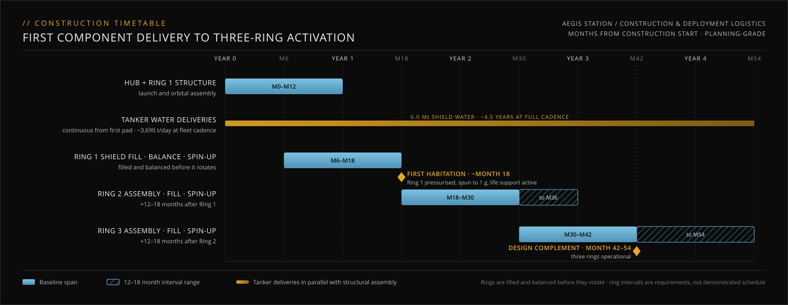

Aegis Station is deployed in phases, ring by ring, with core operations starting long before full completion. This modular approach spreads cost, reduces risk, and enables early returns on investment. Each ring is a self-contained system — physically and operationally isolated from the others — allowing phased crew arrival, testing, and activation.
Dry-orbit assembly and in-situ resource utilization as core principles.
Aegis Station is a modular, rotating habitat constructed in lunar orbit. Rather than launching a fully assembled station or supplying shielding water from Earth, the approach is built around dry-orbit assembly and in-situ resource utilization. Components arrive unshielded and are assembled in place; water for radiation shielding is sourced entirely from the Moon.
Water shielding is not a deliverable shipped from Earth. It is the first product of the lunar economy, extracted, processed, and delivered by the same logistics infrastructure that will sustain the station for decades.
Each ring is a self-contained, fault-isolated system with independent power, life support, and thermal control. This isolation supports phased crew arrival and systematic testing. Ring 1 serves as the pathfinder: it is spun up to 1g once its shield is filled and balanced and the ring is verified, hosts the initial operations and engineering crews, and validates all systems before Rings 2 and 3 follow.
| Ring 1 | Operational approximately 18 months from construction start; first pressurized, inhabited ring |
| Rings 2 & 3 | Follow at 12–18 month intervals after Ring 1; each adds crew capacity, redundancy, and operational volume |
| Design complement | Three rings operational, month 42–54 |

Each ring receives water through five evenly spaced fill ports, supplied by cartridge-based delivery systems.
For the initial fill, the ring remains stationary. This simplifies mass distribution, avoids dynamic slosh complications, and allows for controlled pressurization of the shield layer. The ring structure is engineered to handle full shielding mass while static, and to spin up safely after shielding is complete.
Once filled, the ring is gradually brought up to its operational rotation rate to generate 1g at the outer floor. Top-offs and maintenance fills, which involve much smaller volumes, are made while the ring is spinning: sealed cartridges are carried through the hub/ring boundary on cargo pods and discharged inside the ring.
| Per-ring shield mass | ~2.01 million metric tons |
| Total shield mass | ~6.0 million metric tons |
| Tanker payload | 45 metric tons |
| Number of tankers | 82 |
| Daily delivery capacity | ~3,690 metric tons / day |
| Fill time per ring | ~18 months at fleet cadence |
| Full station fill time | ~4.5 years |
What has to be made, moved, and installed.
| What is built | Per ring | Three rings |
|---|---|---|
| Pressure hull and frames | ~55,000 metric tons | ~165,000 |
| Hoop tension system | ~92,000 metric tons | ~276,000 |
| Shield containment | ~25,000 metric tons | ~75,000 |
| Decks, ~680,000 m² per ring | ~34,000 metric tons | ~102,000 |
| Bulkheads, spokes, hub collar, margin | ~14,000 metric tons | ~42,000 |
| Dry structure | ~220,000 metric tons | ~660,000 |
| Arc segments | 8, ~27,500 metric tons each | 24 |
| Shield water | ~2.01 million metric tons | ~6.0 million |
| Tanker fleet | 82 tankers, 45 metric tons per sortie; ~134,000 cartridge loads over the fill |
| Pads and berths | 11 surface pads and 11 station berths at the 3.2-hour turnaround ceiling; 15 recommended |
| Tanker engines | ~5,400–10,700 over the campaign, as scheduled replacement items |
| Surface plant | Refinery of order 1.5 GW continuous; ~8,300 metric tons of water mined a day at fleet cadence |
| Earth-launched mass | ~660,000 metric tons of ring structure; the hub is not yet stated |
| Not yet sized | Long-Hauler fleet, cartridge pool, interior outfitting |
Structure masses are a concept-level allocation by function; materials and detailed design are left to the structural design. Program cost is not yet estimated.
Dry components from Earth to lunar orbit.
Shield water from the lunar surface to the station.
This path minimizes Earth lift cost, isolates risk domains, and maximizes throughput across the entire build sequence.
Aegis Station enables precise gravity experimentation by installing modular segments along radial booms or structural spokes extending inward from the rings. These modules can be positioned at any desired radius from the central hub, enabling finely tuned simulation of partial gravity environments.
The station's rotation rate is fixed to generate 1g at the 397-meter floor. At this angular velocity (~0.157 rad/s, 1.50 RPM), specific gravity levels occur at the following radii:
| Environment | Target gravity | Required radius |
|---|---|---|
| Earth (1g) | 9.81 m/s² | 397 m |
| Mars (0.38g) | 3.73 m/s² | 151 m |
| Moon (0.165g) | 1.62 m/s² | 66 m |
What does not yet close, carried as open.
| Earth-launch cadence | The dry structure of one ring is ~220,000 metric tons. Delivering it within the first year of construction is about 600 metric tons a day to lunar orbit. That cadence is a requirement, not a demonstrated capability, and the Long-Hauler fleet is not yet sized for it. |
| Ring interval | At fleet cadence one ring's shield is about 18 months of deliveries. The 12-month end of the ring interval needs water delivered ahead of the ring or a higher cadence. |
| Structure mass | ~220,000 metric tons per ring is a concept-level sizing for the spin and pressure loads with conventional materials. A bottom-up structural budget is not yet done, and the hub mass is not yet stated. |
| Cost | Not yet estimated. This edition states materials and equipment quantities, not prices. |
| Item | April 2026 | This edition |
|---|---|---|
| Assembly location | Rings assembled in LEO and transferred by tug | Assembled in 100 km lunar orbit, axis-first, 8 arc segments per ring |
| Shield mass | ~1.1 million metric tons per ring, ~3.3 million total | ~2.01 million metric tons per ring, ~6.0 million total |
| Tanker fleet | 45 tankers, ~2,025 metric tons / day | 82 tankers, ~3,690 metric tons / day |
| Dry structure | ~120,000 metric tons for the station | ~220,000 metric tons per ring, ~660,000 for three rings |
| Cost breakdown | Stated by component | Removed; this edition gives materials and equipment quantities |
| Timeline | Illustrative, years 1–10 | Months from construction start: Ring 1 at ~month 18, design complement at month 42–54 |
| Top-offs | Synchronized cartridge vestibules on the spinning ring | Sealed cartridges through the hub/ring boundary on cargo pods |
| Gravity radii | 1g at 400 m; Mars 152.3 m, Moon 68.1 m | 1g at the 397 m floor; Mars 151 m, Moon 66 m |